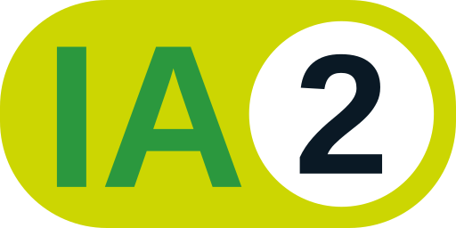
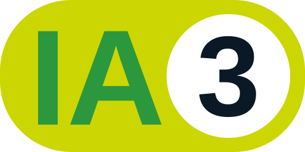
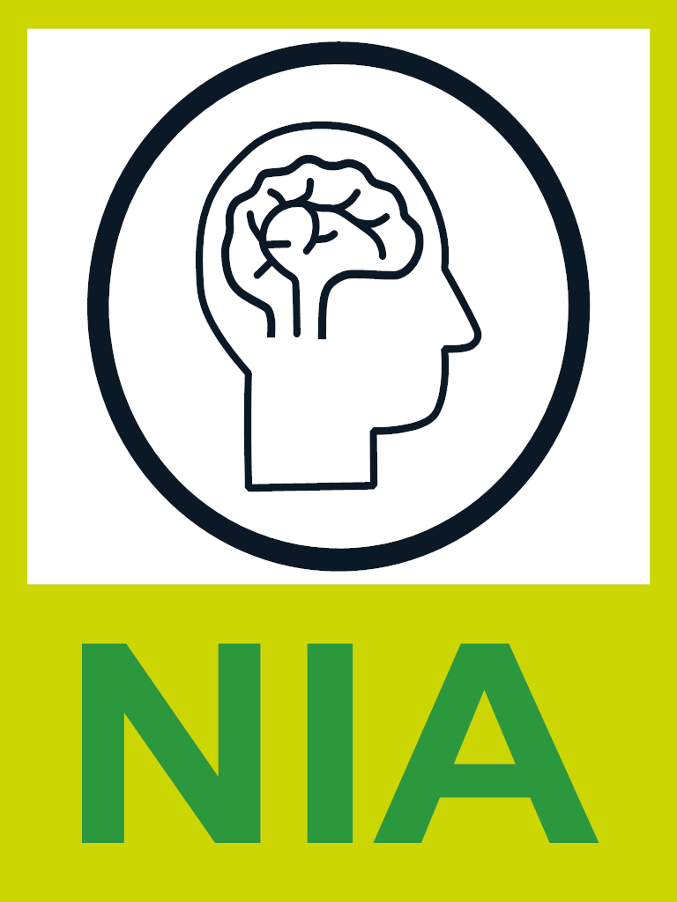
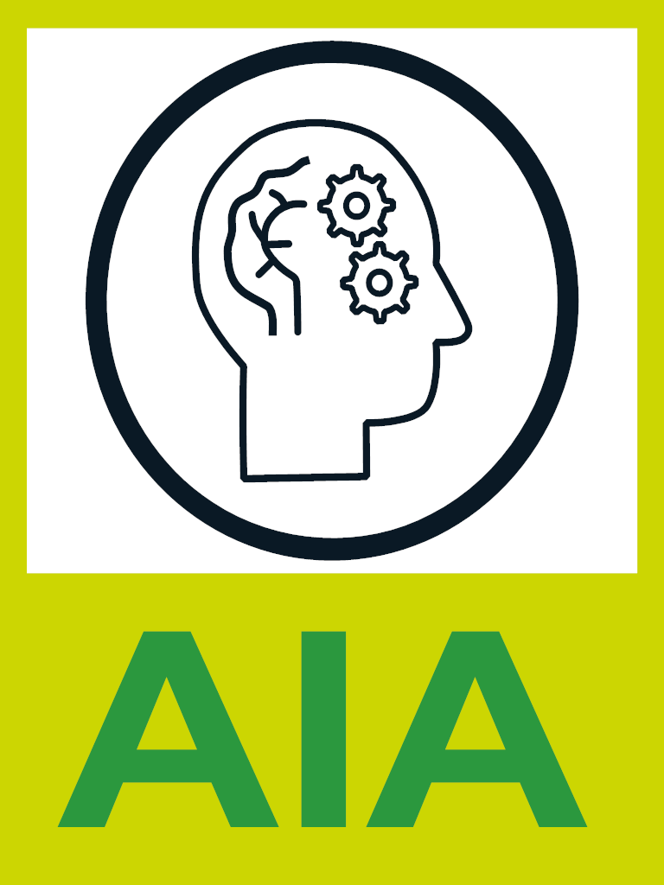
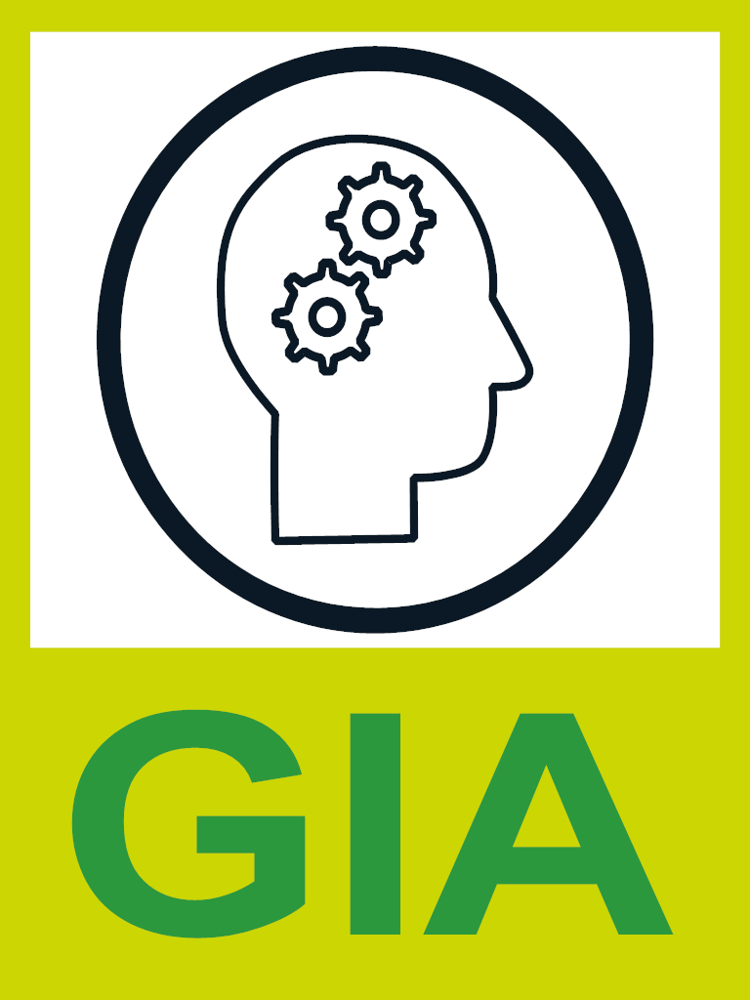

Assistant à la réflexion sur une production
Assistant à l’élaboration partielle d’une production
Aucune intelligence artificielle n'a été utilisé dans cette production.

J’ai utilisé l’outil d’intelligence artificielle [nom de l’outil, version si disponible] afin de [préciser l’objectif de l’utilisation].
Plus précisément, j’ai demandé à l’outil d’accomplir les tâches suivantes :

J’ai utilisé l’outil d’intelligence artificielle [nom de l’outil, version si disponible] afin de [préciser l’objectif de l’utilisation].
Plus précisément, j’ai demandé à l’outil d’accomplir les tâches suivantes :